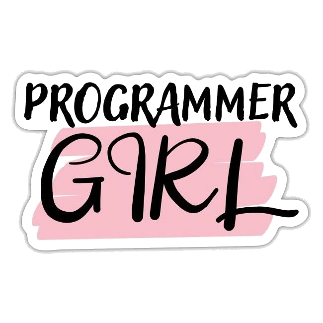

COSMETICS SALES
Interactive Sales Dashboard
KPIs for total revenue ($2.91M), average order value & 93K boxes shipped with trend, category, and salesperson filters.
Hi, I'm Sasindi Maneesha — a BSc (Special) MIS undergraduate at NSBM Green University, interested in business analysis, project coordination and business operations. Experienced in data visualization, business process analysis, user-centered design and teamwork. Eager to apply analytical, communication and problem-solving skills in a practical industry setting.

BSc (Special) in Management Information Systems undergraduate at NSBM Green University, interested in business analysis, project coordination and business operations. Experienced in academic projects involving data visualization, business process analysis and user-centered design. Seeking a Business Analyst, Project Coordinator or UI/UX internship.
Real-world academic & team initiatives combining analytical rigor with intuitive interfaces
Interactive Sales Dashboard
Fertilizer Subsidy App
AI Crop Disease Detection
Web-Based News Platform
KPI tracking, sales intelligence & interactive dashboards
BPM, requirements analysis & workflow optimization
User journeys, wireframes, design systems & prototypes
Relational schema design, entity modeling & queries
Structured analysis reports, user manuals & test cases
Version control, branch PRs, HTML & CSS (basic)
Data organisation, reporting & task coordination
Completed Years 1 and 2. Relevant modules: Database Management Systems, Business Process Management, Business Studies, Enterprise Systems, Systems Analysis and Design, Human Computer Interaction.
G.C.E. Advanced Level and Ordinary Level. Strong academic foundation in analytical subjects and teamwork.
Data is only as valuable as the decisions it empowers. My goal is to make business insights immediately readable and impactful.
Empathy for real users is at the core of great design. Every interface must simplify complexity, not add to it.
True innovation comes through shared ownership, open communication, and constant iterative refinement.